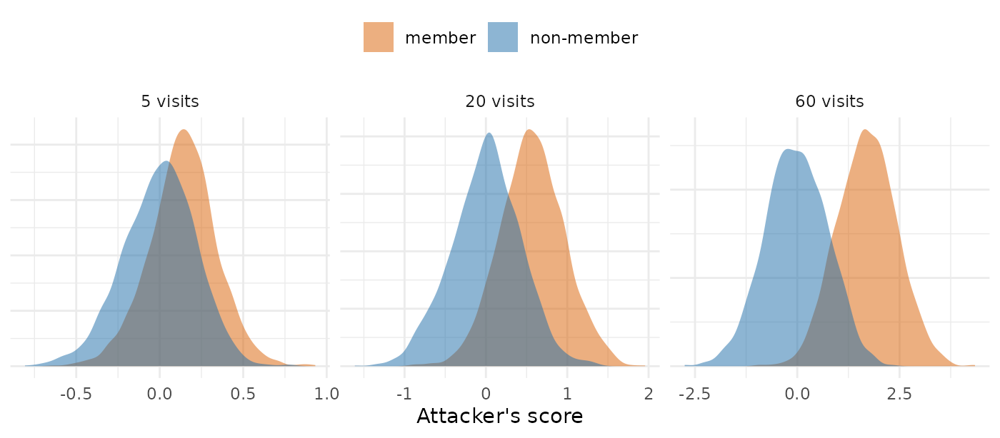

Membership Inference Against the PMX Model Fingerprint
Andrew Stein
Source:vignettes/articles/pmxmodel-privacy-simulation.Rmd
pmxmodel-privacy-simulation.RmdPrivacy
protections in the PMX model generator reports how well an attacker
can tell whether a given patient was in a study from what
synpmx_model() releases. This article shows how those
numbers are computed: what the attacker holds, the score it gives each
person, and how the area under the curve (AUC) summarizes how well that
score separates patients who were in the study from patients who were
not. Every number is computed in this article.
The simulated fingerprint is a simplified model of the real one, and is not the package’s code. It keeps the two kinds of number that membership inference works on, a population model’s typical values and variances, and the share of patients sampled at each scheduled visit, and reduces each to what the attack needs. The code is shown in full at the end.
What the Attacker Holds
Membership inference asks one question about one person, the candidate: was this person in the study? The attacker holds three things:
- the fingerprint, which
synpmx_model()attaches to every synthetic dataset it generates; - the candidate’s own measurements of the kind the study made, such as which scheduled visits they were sampled at, or their random effects, which say how far that person’s own drug clearance and volume sit from the typical values and which their concentrations imply;
- reference values for the population the study drew from, such as the average attendance at each scheduled visit.
The attacker does not see the other patients. A patient in the study contributed to every number in the fingerprint, so the fingerprint leans slightly toward them; a patient who was not in it contributed nothing. The attack measures that lean.
One Study, Five Visits
The smallest case shows every step. Ten patients each have a concentration sample scheduled at 5 visits, and each sample is either taken (1) or missed (0). The average attendance differs by visit, as it does in a sparse sampling design, where each patient is sampled at some of the scheduled times. Each row is a patient:
set.seed(3)
average <- c(0.3, 0.5, 0.7, 0.4, 0.6)
study <- draw_attendance(10, average, correlation = 0)
dimnames(study) <- list(paste("patient", 1:10), paste("visit", 1:5))
study
#> visit 1 visit 2 visit 3 visit 4 visit 5
#> patient 1 1 1 0 0 0
#> patient 2 1 1 0 1 1
#> patient 3 1 1 0 0 0
#> patient 4 0 1 0 1 1
#> patient 5 0 1 1 0 1
#> patient 6 0 1 0 1 1
#> patient 7 1 0 0 0 1
#> patient 8 1 0 1 0 0
#> patient 9 0 1 1 1 0
#> patient 10 0 1 0 1 1The simulated fingerprint holds the share of patients sampled at each visit, after the floor that rounds a share with one or two patients on either side to 0 or 1:
released <- release_shares(study, floor = 3)
rbind(average = average, released_share = released)
#> visit 1 visit 2 visit 3 visit 4 visit 5
#> average 0.3 0.5 0.7 0.4 0.6
#> released_share 0.5 1.0 0.3 0.5 0.6At visit 2, 8 of the 10 patients were sampled, which leaves 2 who missed it, so the floor released the share as 1.
There are two candidates: patient 1, who is in the study, and a new patient from the same population, who is not.
member <- unname(study[1, ])
non_member <- draw_attendance(1, average, correlation = 0)[1, ]The score asks whether the visits the candidate missed are the visits whose released attendance came out below average. At each visit it multiplies how far the candidate sits from the average, 1 minus the average for a visit they were sampled at and minus the average for one they missed, by how far the released share sits from the average, and adds the products. A product is positive when the candidate and the fingerprint lean the same way: sampled where the share came out above average, or missed where it came out below.
data.frame(
visit = 1:5, average = average, share = unname(released),
member = member, member_term = (member - average) * (released - average),
non_member = non_member,
non_member_term = (non_member - average) * (released - average),
row.names = NULL)
#> visit average share member member_term non_member non_member_term
#> 1 1 0.3 0.5 1 0.14 0 -0.06
#> 2 2 0.5 1.0 1 0.25 0 -0.25
#> 3 3 0.7 0.3 0 0.28 1 -0.12
#> 4 4 0.4 0.5 0 -0.04 0 -0.04
#> 5 5 0.6 0.6 0 0.00 1 0.00
scores <- c(member = attendance_score(member, average, released),
non_member = attendance_score(non_member, average, released))
scores
#> member non_member
#> 0.63 -0.47Patient 1 is one of the ten patients behind every share, so each share leans one tenth of the way toward patient 1’s own attendance: a visit patient 1 missed comes out a tenth lower than it would have with them sampled there. The non-member’s attendance had no part in the shares. In this one study the member scores higher than the non-member, but one study shows little, because the shares also vary by chance from one study to the next, by more than one patient’s tenth. The lean shows over many studies.
From Scores to the AUC
The experiment is repeated: a new study is drawn, one member and one non-member are scored, and this is done 2,000 times. Each panel shows the two resulting piles of scores, for 10 patients scheduled at 5, 20 or 60 visits:
set.seed(11)
piles <- do.call(rbind, lapply(c(5, 20, 60), function(visits) {
one <- attendance_scores(10, visits, correlation = 0, floor = 3,
draws = 2000)
rbind(data.frame(visits = visits, candidate = "member",
score = one$member),
data.frame(visits = visits, candidate = "non-member",
score = one$non_member))
}))
piles$panel <- factor(paste(piles$visits, "visits"),
levels = paste(c(5, 20, 60), "visits"))
ggplot2::ggplot(piles, ggplot2::aes(score, fill = candidate)) +
ggplot2::geom_density(alpha = 0.5, colour = NA) +
ggplot2::facet_wrap(~panel, scales = "free") +
ggplot2::scale_fill_manual(values = c(member = "#D95F02",
`non-member` = "#1B6CA8")) +
ggplot2::labs(x = "Attacker's score", y = NULL, fill = NULL) +
ggplot2::theme_minimal() +
ggplot2::theme(axis.text.y = ggplot2::element_blank(),
legend.position = "top")
The AUC is the probability that a randomly chosen member scores above a randomly chosen non-member [1]. An AUC of 0.5 means the two piles are the same, and the score is a coin toss. An AUC of 1 means every member scores above every non-member. The name comes from the receiver operating characteristic curve, which plots the share of members flagged against the share of non-members flagged as a threshold on the score moves; the area under it equals that probability.
panel_auc <- vapply(c(5, 20, 60), function(visits) {
auc(piles$score[piles$visits == visits & piles$candidate == "member"],
piles$score[piles$visits == visits & piles$candidate == "non-member"])
}, numeric(1))
data.frame(visits = c(5, 20, 60), auc = two(panel_auc))
#> visits auc
#> 1 5 0.68
#> 2 20 0.84
#> 3 60 0.95An AUC is not the share of patients identified. An AUC of 0.84 means that, shown one patient who was in the study and one who was not, the attacker picks the right one that often. The piles still overlap, so for any single person the attacker can be wrong; what the AUC measures is how far the fingerprint, taken over many people, gives membership away.
The Attendance Table, Row by Row
tables <- membership_tables()
attendance <- tables$attendance
data.frame(visits = attendance$visits,
patients_behind_share = attendance$patients,
correlation_within_patient = attendance$correlation,
auc_without_floor = two(attendance$without_floor),
auc_released = two(attendance$released))
#> visits patients_behind_share correlation_within_patient auc_without_floor
#> 1 5 10 0.0 0.68
#> 2 20 10 0.0 0.84
#> 3 60 10 0.0 0.96
#> 4 5 30 0.0 0.61
#> 5 20 30 0.0 0.72
#> 6 60 30 0.0 0.84
#> 7 5 100 0.0 0.58
#> 8 20 100 0.0 0.62
#> 9 60 100 0.0 0.70
#> 10 5 10 0.6 0.68
#> 11 20 10 0.6 0.73
#> 12 60 10 0.6 0.75
#> 13 5 30 0.6 0.59
#> 14 20 30 0.6 0.63
#> 15 60 30 0.6 0.64
#> 16 5 100 0.6 0.54
#> 17 20 100 0.6 0.58
#> 18 60 100 0.6 0.57
#> auc_released
#> 1 0.67
#> 2 0.83
#> 3 0.95
#> 4 0.61
#> 5 0.72
#> 6 0.84
#> 7 0.58
#> 8 0.62
#> 9 0.70
#> 10 0.67
#> 11 0.72
#> 12 0.75
#> 13 0.59
#> 14 0.63
#> 15 0.64
#> 16 0.54
#> 17 0.58
#> 18 0.57Each row is one setting of the experiment above, repeated 1,500 times, with the average attendance at each visit drawn between 0.2 and 0.8, which is where the in-between shares of the sparse-sampling public studies sit (the last table below):
-
visitsis how many scheduled visits a patient can be sampled at, and so how many shares the fingerprint holds. -
patients_behind_shareis how many patients each share is a share of. The fingerprint pools a share over the arms that have the visit, so this is usually the whole cohort. -
correlation_within_patientis 0 where a patient’s visits are independent, and 0.6 where a patient who misses one visit is much more likely to miss the next, as a patient drifting out of the study would. -
auc_without_floorreleases every share as it is. -
auc_releasedrounds a share with one or two patients on either side to 0 or 1, assynpmx_model()releases it. Both columns score the same simulated studies, so they differ only by what the floor does.
Read across one row: with 10 patients behind each share and 20 independently attended visits, an attacker who knows which of the 20 visits one candidate was sampled at, and the average attendance at each, picks the member over the non-member with probability 0.83.
Three things move the AUC, and the floor barely does. More visits raise it, because each visit adds the same small lean toward every member: the leans add up in proportion to the number of visits, while the chance variation grows only with its square root. More patients behind each share lower it, because each patient is a smaller part of every share. Correlation within a patient lowers it, because correlated visits repeat the same information. The floor barely moves it, because it changes only shares near 0 or 1.
The fingerprint does not hold this table. Its visit model is one attendance rate per endpoint, applied at every visit of the endpoint an arm has, so an attacker who knows which visits a candidate was sampled at has one number per endpoint to match rather than a share per visit. Pooling an endpoint’s visits into one rate shrinks the member’s lean on it and its chance variation alike, so each rate exposes about as much as one visit’s share, and a study with five endpoints sits near the five-visit rows. A binary or ordinal endpoint is released the same way, as one set of level frequencies over the whole study, and dose changes as three rates.
The Population-Model Table
The population model works the same way with different numbers. Each patient has a random effect on each of five parameters of a two-compartment oral model: clearance, the central and peripheral volumes, the flow between them, and the absorption rate. The released typical value of a parameter sits close to the true typical value times the exponential of the patients’ mean random effect, and the released between-subject variance close to the mean of their squared random effects. A patient in the study therefore pulls each typical value toward their own random effect and each variance toward their own squared one, by one part in the cohort size.
The attacker holds the candidate’s own random effects and reference values for the population, and the score adds two kinds of product, each positive when the fingerprint leans toward the candidate: the candidate’s random effect times how far the released typical value sits from the reference, and the candidate’s squared random effect, relative to the variance, times how far the released variance sits from the reference variance.
population <- tables$population
data.frame(patients = population$patients,
reference_off_by = sprintf("%.0f%%", 100 * population$off_by),
auc_unrounded = two(population$unrounded),
auc_two_figures = two(population$two_figures),
auc_released = two(population$released))
#> patients reference_off_by auc_unrounded auc_two_figures auc_released
#> 1 12 0% 0.74 0.74 0.70
#> 2 32 0% 0.66 0.66 0.60
#> 3 60 0% 0.60 0.60 0.56
#> 4 12 10% 0.66 0.66 0.64
#> 5 32 10% 0.58 0.57 0.57
#> 6 60 10% 0.55 0.55 0.54
#> 7 12 20% 0.61 0.61 0.59
#> 8 32 20% 0.54 0.54 0.54
#> 9 60 20% 0.53 0.53 0.53-
patientsis the cohort the model is fitted to. -
reference_off_byis the error in the attacker’s reference values. At 0% the attacker knows the population’s true values. At 10% or 20% the reference comes from another study of the same drug, whose population differs from this one’s. -
auc_unroundedreleases every estimate at full precision. -
auc_two_figuresrounds every estimate to two significant figures. -
auc_releasedrounds every estimate to one significant figure, assynpmx_model()releases them. All three columns score the same simulated studies.
Read across one row: for a model fitted to 12 patients, an attacker who holds a candidate’s random effects and the population’s true values picks the member over the non-member with probability 0.70, and with a reference off by 20%, 0.59. The AUC falls with cohort size and with the reference’s error. Rounding to two significant figures leaves it where it was, because an estimate’s sampling variation from one study to the next is larger than a two-figure step. One figure lowers it, because a one-figure step, from a tenth of the value to all of it, is as wide as that variation, so the released value is often the same with the candidate in the study or out; that is why the fingerprint rounds to one.
What Each Public Study Releases
The numbers the attack could use in the fingerprint of each stored fit in the public-data evaluation: the random effects of the population model, the attendance rate of each endpoint, and the free level frequencies of the binary and ordinal endpoints, each of which rests on every patient in the study or in the arms that measured the endpoint. An endpoint with several levels has one fewer free frequency than levels, because they add up to 1.
files <- c(warfarin = "warfarin-model-fit.rds",
theo_md = "theo-md-model-fit.rds",
mad = "mad-model-fit.rds",
case1_pkpd = "case1-pkpd-model-fit.rds",
wbcSim = "wbcsim-model-fit.rds",
mavoglurant = "mavoglurant-model-fit.rds",
nimoData = "nimo-model-fit.rds",
pheno_sd = "pheno-model-fit.rds",
mixroute_sim = "mixroute-sim-model-fit.rds",
onc_sim = "onc-sim-model-fit.rds")
rows <- lapply(names(files), function(study) {
fit <- stored_fit(files[[study]])
if (!inherits(fit, "pmx_fitted_model")) return(NULL)
fingerprint <- model_fingerprint(fit)
# One rate per endpoint, listed at each of its visits in each arm.
rate <- unique(unlist(lapply(fingerprint$visits, function(v) {
p <- as.numeric(v$probability)
paste(fingerprint$cells$endpoint, p)[p > 0 & p < 1]
})))
marginals <- unique(Filter(Negate(is.null),
unlist(fingerprint$discrete, recursive = FALSE)))
data.frame(study = study, patients = fingerprint$n_source,
random_effects = sum(vapply(fingerprint$pk_models, function(model) {
nrow(model$parameters$omega)
}, integer(1))),
attendance_rates = length(rate),
discrete_frequencies = sum(vapply(marginals, function(m) {
max(0, length(m$levels) - 1)
}, numeric(1))))
})
do.call(rbind, rows[!vapply(rows, is.null, logical(1))])
#> study patients random_effects attendance_rates discrete_frequencies
#> 1 warfarin 32 5 2 0
#> 2 theo_md 12 5 1 0
#> 3 mad 60 5 0 3
#> 4 case1_pkpd 180 5 0 0
#> 5 wbcSim 45 0 1 0
#> 6 mavoglurant 120 4 1 0
#> 7 nimoData 12 4 1 0
#> 8 pheno_sd 59 4 1 0
#> 9 mixroute_sim 90 5 0 0
#> 10 onc_sim 200 5 2 0An attendance rate of 1 tells the attacker nothing, so
attendance_rates counts the endpoints whose rate is below
1, each a single number for the patients behind it and each worth about
one visit in the attendance table. For the population model, the cohort
size places a study among the rows of the second table; a study fitted
with more random effects than five gives the attacker more numbers to
add up.
What the Simulation Leaves Out
- The attacker is strong. Its reference is exact except where the error is set, and it holds the candidate’s own trial measurements, which outside the study exist only where the same quantities are measured for the same patient: at a study site, in a related study, or in routine care.
- The AUC is an average over members. A patient far from the typical values, or with an unusual run of outcomes, moves the fingerprint further toward themselves and is more exposed than the average member, which is why membership-inference studies report the attack’s success on such patients separately [2, 3].
- The fingerprint is simplified. The visits are exchangeable apart from their rates, the random effects are normal and independent across parameters, and the real fingerprint holds further numbers this simulation leaves out: the dosing model, the covariate summaries and the PD time courses.
- The score is not the most powerful one possible. It is of the kind used to trace individuals in pooled genetic data [4, 5, 6]. An attacker who can simulate studies from the same population can calibrate each candidate’s score, as the strongest attacks on machine-learning models do [3], so these AUCs are a lower bound for an attacker holding what this one holds.
The Simulation Code
Every function used above, as run:
# Membership inference against two simplified models of the release
# `synpmx_model()` makes. Read by pmxmodel-privacy-simulation.Rmd, which works
# through each step, and by pmxmodel-privacy.Rmd, which quotes the results.
#
# A member is a patient in the simulated study and a non-member a new patient
# from the same population. The attacker holds the candidate's own values and
# reference values for the population, and scores the candidate by how far the
# release has moved from the reference toward them. Each protection is scored
# on the same simulated studies with and without it, so two columns differ only
# by what the protection does.
# The probability that a member scores above a non-member, ties counted half:
# the area under the receiver operating characteristic curve.
auc <- function(members, others) {
ranks <- rank(c(members, others))
n <- length(members)
(sum(ranks[seq_len(n)]) - n * (n + 1) / 2) / (n * length(others))
}
# Attendance, one row per patient and one column per scheduled visit: 1 where
# the patient was sampled there and 0 where the sample was missed. The chance of
# a sample differs by visit, and `correlation` is shared between one patient's
# visits: a patient who misses one visit is more likely to miss the next.
draw_attendance <- function(patients, rate, correlation) {
latent <- sqrt(correlation) * rnorm(patients) +
sqrt(1 - correlation) * matrix(rnorm(patients * length(rate)), patients)
1 * sweep(latent, 2, stats::qnorm(rate), "<")
}
# The share of patients sampled at each visit, as the visit model releases it.
# With `floor = 3`, a share with one or two patients on either side is rounded
# to 0 or 1, as the release does; `floor = 1` releases every share as it is.
release_shares <- function(attendance, floor) {
patients <- nrow(attendance)
held <- colSums(attendance)
released <- held / patients
thin <- pmin(held, patients - held) > 0 &
pmin(held, patients - held) < floor
released[thin] <- as.numeric(released[thin] >= 0.5)
released
}
# The attacker's score for one candidate: at each visit, whether the candidate
# was sampled minus the visit's average attendance, times the released share
# minus that average, summed over visits. It is high when the visits the
# candidate missed are the ones whose released attendance came out below
# average, and the ones they kept came out above.
attendance_score <- function(candidate, rate, released) {
sum((candidate - rate) * (released - rate))
}
# One member's and one non-member's score from each of `draws` simulated
# studies: `patients` patients behind each share, scheduled at `visits` visits,
# with an average attendance between 0.2 and 0.8 at each, and the attacker's
# reference the true average. The release pools a share over the arms that
# have the visit, so the patients behind it are usually the whole cohort.
attendance_scores <- function(patients, visits, correlation, floor,
draws = 1500) {
scores <- vapply(seq_len(draws), function(draw) {
rate <- runif(visits, 0.2, 0.8)
study <- draw_attendance(patients, rate, correlation)
outsider <- draw_attendance(1, rate, correlation)[1, ]
released <- release_shares(study, floor)
c(attendance_score(study[1, ], rate, released),
attendance_score(outsider, rate, released))
}, numeric(2))
data.frame(member = scores[1, ], non_member = scores[2, ])
}
# The same studies scored with every share released and with the floor.
attendance_attack <- function(patients, visits, correlation, draws = 1500) {
scores <- vapply(seq_len(draws), function(draw) {
rate <- runif(visits, 0.2, 0.8)
study <- draw_attendance(patients, rate, correlation)
outsider <- draw_attendance(1, rate, correlation)[1, ]
whole <- release_shares(study, 1)
floored <- release_shares(study, 3)
c(attendance_score(study[1, ], rate, whole),
attendance_score(outsider, rate, whole),
attendance_score(study[1, ], rate, floored),
attendance_score(outsider, rate, floored))
}, numeric(4))
c(without_floor = auc(scores[1, ], scores[2, ]),
released = auc(scores[3, ], scores[4, ]))
}
# The population model: five parameters of a two-compartment oral model, each
# released as a typical value and a between-subject variance. On the log scale
# a typical value is close to the mean of the patients' random effects and the
# variance close to the mean of their squares. The attacker holds the
# candidate's own random effects, and `off_by` is the SD, on the log scale, of
# the error in the attacker's reference values. Each study's own typical values
# vary around the population's, so rounding boundaries fall where they would in
# a real study. The same studies are scored with the release unrounded, at two
# significant figures, and at the one it is released at.
population_attack <- function(patients, off_by, draws = 2000) {
typical <- c(cl = 4.3, v = 31, q = 2.1, v2 = 55, ka = 1.2)
omega <- c(cl = 0.3, v = 0.25, q = 0.4, v2 = 0.35, ka = 0.6)^2
scores <- vapply(seq_len(draws), function(draw) {
centre <- typical * exp(rnorm(5, 0, 0.3))
eta <- vapply(omega, function(w) rnorm(patients, 0, sqrt(w)),
numeric(patients))
outsider <- vapply(omega, function(w) rnorm(1, 0, sqrt(w)), numeric(1))
reference_typical <- centre * exp(rnorm(5, 0, off_by))
reference_omega <- omega * exp(rnorm(5, 0, 2 * off_by))
score <- function(e, released_typical, released_omega) {
sum(e * log(released_typical / reference_typical) / reference_omega) +
sum((e^2 / reference_omega - 1) *
(released_omega / reference_omega - 1)) / 2
}
exact_typical <- centre * exp(colMeans(eta))
exact_omega <- colMeans(eta^2)
unlist(lapply(c(Inf, 2, 1), function(digits) {
shown <- function(x) if (is.finite(digits)) signif(x, digits) else x
c(score(eta[1, ], shown(exact_typical), shown(exact_omega)),
score(outsider, shown(exact_typical), shown(exact_omega)))
}))
}, numeric(6))
c(unrounded = auc(scores[1, ], scores[2, ]),
two_figures = auc(scores[3, ], scores[4, ]),
released = auc(scores[5, ], scores[6, ]))
}
# Both tables, from one seed, so that every article quoting them quotes the
# same numbers.
membership_tables <- function() {
set.seed(20261002)
population <- expand.grid(patients = c(12, 32, 60), off_by = c(0, 0.1, 0.2))
population <- cbind(population, t(mapply(
population_attack, population$patients, population$off_by)))
attendance <- expand.grid(visits = c(5, 20, 60), patients = c(10, 30, 100),
correlation = c(0, 0.6))
attendance <- cbind(attendance, t(mapply(
attendance_attack, attendance$patients, attendance$visits,
attendance$correlation)))
list(population = population, attendance = attendance)
}References
- Hanley JA, McNeil BJ. The meaning and use of the area under a receiver operating characteristic (ROC) curve. Radiology. 1982;143(1):29–36.
- Shokri R, Stronati M, Song C, Shmatikov V. Membership inference
attacks against machine learning models. IEEE Symposium on Security
and Privacy.
- Carlini N, Chien S, Nasr M, Song S, Terzis A, Tramèr F. Membership inference attacks from first principles. IEEE Symposium on Security and Privacy. 2022.
- Homer N, Szelinger S, Redman M, et al. Resolving individuals contributing trace amounts of DNA to highly complex mixtures using high-density SNP genotyping microarrays. PLoS Genetics. 2008;4(8):e1000167.
- Sankararaman S, Obozinski G, Jordan MI, Halperin E. Genomic privacy and limits of individual detection in a pool. Nature Genetics. 2009;41:965–967.
- Dwork C, Smith A, Steinke T, Ullman J, Vadhan S. Robust traceability
from trace amounts. IEEE Symposium on Foundations of Computer
Science (FOCS).